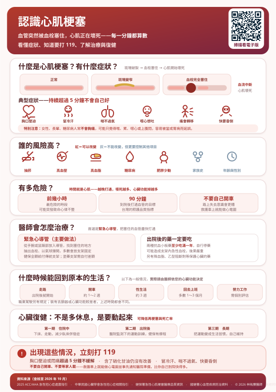

血管突然被血栓塞住，心肌正在壞死。這一頁說明怎麼認出它、為什麼要立刻打 119、醫師會怎麼治療，以及出院之後怎麼把生活走回來。
本頁為 A5 衛教單張的詳細版。如果您或身邊的人正在胸痛，請停止閱讀，立刻撥打 119。
心臟自己也需要血液供應，負責供應的血管叫做冠狀動脈。心肌梗塞指的是：冠狀動脈被血栓「完全」堵住，血流中斷，那一塊心肌開始壞死。
兩者是同一條路上的不同階段。穩定型心絞痛是斑塊讓血管變窄，活動時供血不夠；心肌梗塞則是斑塊表面破裂，身體以為受傷而形成血栓，把血管整個塞死。
所以心絞痛是警訊——如果您的胸悶變得更頻繁、更容易發作、休息也不會好，那是斑塊可能不穩定的徵象，要盡快就醫，不要等。更詳細的說明請見 認識心絞痛。
最具代表性的一句話是：胸口壓迫感持續超過 5 分鐘，而且休息也不會自己好。
女性、長輩（尤其 75 歲以上）、糖尿病人特別容易出現「不典型症狀」。糖尿病若合併神經病變，痛覺本身就會變鈍。
這些人可能完全不痛，只表現為：突然很喘、莫名的疲倦虛弱、噁心想吐、上腹不適、冒冷汗，或單純覺得「很不對勁」。
判斷原則：如果您本來沒有這樣，而現在突然出現上述情形，尤其同時冒冷汗，就當成心臟問題處理，先打 119。判斷錯了頂多白跑一趟；判斷漏了可能來不及。
以下特徵比較不像心肌梗塞，但都不能單靠自己排除：
但只要同時有冒冷汗、喘、噁心或快昏倒，就不要再推理，直接打 119。
紅色的是可以改變的，灰色的是不能改變、但正因如此更要把其他項目控制好。
台灣近年中壯年心肌梗塞並不少見。年輕族群的心肌梗塞常與抽菸（含電子煙）、熬夜、極端壓力、未診斷的高血脂（特別是家族性高膽固醇血症）有關。
如果您有早發性冠心病家族史，不要等到健檢年齡才開始驗血脂。
心肌梗塞的危險分成兩個層面，而且兩個都和時間直接相關。
血流中斷後的前幾個小時，心肌處於極不穩定的狀態，最容易出現致命的心室顫動——心臟不再有效跳動，數分鐘內就會失去意識。
這也是為什麼很多人是在到醫院之前就過世的。縮短「從發作到抵達醫院」這段時間，是最能救命的一件事。
自己開車去醫院有三個問題：
叫家人開車載你，和自己開車一樣有這些問題。
心肌一旦壞死就不會再長回來，會變成疤痕組織。壞死的範圍越大，日後心臟功能越差，發生心臟衰竭與惡性心律不整的機會越高。
| 時間 | 意義 |
|---|---|
| 發作後越早打通 | 能救回的心肌越多，長期心臟功能越好 |
| 到院後 90 分鐘內 | 急性 ST 段上升型心肌梗塞打通血管的目標時間，也是台灣的醫療品質指標之一 |
| 從接觸醫療到打通 ≤ 90 分鐘 | 2025 年美國心臟學會急性冠心症指引的系統目標；若需轉院，放寬至 120 分鐘內 |
這些數字聽起來是醫院的事，但其中最長、也最可控的一段，是「從你開始不舒服到你決定求救」。這一段完全掌握在病人與家屬手上。
「可能是胃痛」「休息一下就好」「不想麻煩別人」「等天亮再說」——這些是臨床上最常聽到的理由，也是最可惜的。
心肌梗塞不會因為你忍耐而好轉，只會讓更多心肌死掉。
從手腕的橈動脈或鼠蹊部的股動脈放入一條細導管，送到心臟的冠狀動脈，打顯影劑找出塞住的位置，然後：
全程多數在清醒狀態下進行，只做局部麻醉。更完整的流程、風險與術後照顧，請見 心導管檢查與手術。
傳統金屬支架健保全額給付。塗藥支架健保給付一部分，差額需自付，金額依廠牌與院所而異。
兩者的選擇要看血管的粗細、病灶的長度與複雜度、以及您能不能穩定服用抗血小板藥，不是越貴越適合。術前請直接問清楚費用與理由。
當預期無法在時限內轉送到可做心導管的醫院時，醫師可能先給血栓溶解劑（用藥物把血栓溶掉），穩定後再轉院處理。
這是次於心導管的選擇，但在時間就是心肌的前提下，先打通比等待更重要。
打通血管後通常會在加護病房或心臟照護病房觀察一到數天，監測心律與心臟功能，並開始調整長期用藥。順利的話，多數人住院約 3～5 天。
放了支架之後，血管內皮還沒長好之前，支架表面是會吸引血栓的。抗血小板藥就是在這段期間防止血栓形成。
自行停藥可能造成「支架內急性血栓」——血管在數小時內再次完全塞住，死亡率比第一次心肌梗塞還高。
通常是阿斯匹靈加上另一種（如 clopidogrel、ticagrelor、prasugrel）。目前指引建議在沒有高出血風險的情況下至少服用一年，之後由醫師決定是否調整為單一用藥。
部分出血風險較高的人，醫師可能會提早調整組合——但那是醫師評估後的決定，不是自己停。
請務必告訴那位醫師或牙醫：您有放支架、正在吃抗血小板藥，並說出藥名。
多數牙科處置不需要停藥。真的需要調整時，應由心臟科醫師與執行處置的醫師一起決定，不要自行停。
| 藥物 | 在做什麼 |
|---|---|
| 高強度降血脂藥 | 穩定斑塊、降低再發。心肌梗塞後 LDL 目標會訂得很低（詳見 認識膽固醇） |
| 乙型阻斷劑 | 減慢心跳、減少心臟耗氧。是否需要長期服用，取決於您的心臟收縮功能——近兩年有重要改變，見下方說明 |
| ACEI／ARB | 保護心室、減少心臟重塑與心衰竭 |
| 硝化甘油舌下含片 | 備用。胸痛發作時使用，含第 1 錠後 5 分鐘沒改善就打 119 |
過去數十年，「心肌梗塞後要長期吃乙型阻斷劑」幾乎被視為理所當然。但那些證據來自還沒有緊急心導管、也還沒有現代降血脂治療的年代。近兩年多個大型隨機試驗重新檢驗了這件事，結論改變了。
| 您的心臟收縮功能（左心室射出分率） | 目前的證據 |
|---|---|
| 40% 以下（明顯下降） | 長期服用仍有明確好處，這一點完全沒有改變 |
| 40～49%（輕度下降） | 目前證據顯示仍有好處 |
| 50% 以上（正常） | 長期服用沒有額外好處——這是改變最大的一群 |
2025 年 11 月發表於《新英格蘭醫學期刊》的分析，合併了 REBOOT、REDUCE-AMI、BETAMI、DANBLOCK、CAPITAL-RCT 五個試驗、共 17,801 位心肌梗塞病人的個別資料。追蹤約四年後，在心臟功能正常（≥50%）的人身上，有吃與沒吃的主要心血管事件都約 8%，死亡、再梗塞與心臟衰竭都沒有差別。
REBOOT 試驗的性別分析發現，女性使用乙型阻斷劑的結果較差，主要來自死亡率，且在心臟功能正常、使用劑量較高的女性最明顯；男性沒有這個現象。
但在合併五個試驗的分析中，女性的這個差異未達統計顯著。目前只能視為一個需要留意的訊號，還不是定論。
第一：不要自己停。住院初期與早期使用乙型阻斷劑仍然是建議的，而且突然停用可能讓心跳與血壓反彈。
第二：您可以在回診時主動問這兩句話——
如果您的心臟功能已經恢復正常，這是一個合理、而且有實證支持的討論。要不要調整、怎麼調整，由醫師決定。
因為指引的更新通常落後試驗結果一段時間。2023 年歐洲心臟學會的指引建議「不論射出分率都可考慮使用」，但那份指引本身就寫明正在等 REBOOT 與 BETAMI-DANBLOCK 的結果——而這兩個試驗現在都已經發表。
2025 年美國 ACC/AHA 的急性冠心症指引則已不建議心臟功能正常者出院後常規長期使用。這是一個正在改變中的題目，請以您主治醫師對您個人的評估為準。
血壓、血糖、血脂的控制目標，以及戒菸，和吃藥一樣重要——這些才是決定會不會有第二次的關鍵。
這是出院時最常被問、卻最少被好好回答的問題。下面是沒有併發症、心臟功能恢復良好的一般情況。
如果您有心臟功能明顯下降、心衰竭、惡性心律不整、裝了去顫器，或心導管後仍有未處理的病灶，上述每一項都會不一樣。
請在出院前或第一次回診時，直接把您的生活需求講出來——「我的工作要搬東西」「我每天要騎機車通勤」「我想恢復爬山」。醫師才能給您具體的答案，而不是一句「慢慢來」。
心肌梗塞之後出現焦慮、失眠、對運動產生恐懼、情緒低落非常常見，而且會直接影響復原——怕喘就不敢動，不動則體能更差，形成惡性循環。
這不是軟弱，是心臟事件後可預期的反應。回診時請說出來；心臟復健的團隊通常也能提供協助。
以前認為心臟受過傷就要靜養，現在完全相反。有醫療監測的規律運動訓練，能改善體能、減少症狀、改善情緒，並降低再次梗塞與死亡的機會。
長期不動反而讓肌肉流失、體能更差、更喘，也更容易焦慮。
心臟復健在台灣是健保給付的醫療項目，急性心肌梗塞後有一定期間的療程（實務上常見為出院後數個月內）。開始前通常會安排運動心肺功能測試，據以開立個人化的運動處方。
各醫院是否設有心臟復健中心、療程安排與部分負擔並不一致。這是一項要主動開口才會啟動的資源——出院前或回診時請直接問：「我可以做心臟復健嗎？」
不要自己開車，也不要讓家人載。
心肌梗塞最致命的時刻往往發生在院外。身邊的人會不會急救，是能否撐到醫院的關鍵。
撥打 119 時，接線人員會在電話中一步步教你做 CPR，請照著做、不要掛斷。公共場所的 AED 可以直接取用，機器會語音指示，不會用也不會做錯。
不是。支架處理的是當下塞住的那一段，但造成斑塊的原因（血脂、血壓、血糖、抽菸）還在，其他血管仍可能長出新的斑塊。支架是急救，長期靠的是藥物與生活型態。
壞死的心肌會變成疤痕，確實不會再生。但沒有壞死的部分可以代償，越早打通，保留下來的越多。這也是為什麼時間這麼重要。
能，而且應該要。經過評估後的規律運動是降低再發的有效方法之一。真正危險的是沒有評估就突然做高強度運動，以及完全不動。
單純、恢復順利的心肌梗塞，一般在穩定數週後多可搭機，但務必先與醫師確認，並隨身攜帶藥物與病歷摘要。心臟功能較差或近期仍有症狀者不在此限。
如果您是早發性（男性 55 歲前、女性 65 歲前）心肌梗塞，建議直系親屬提早檢驗血脂與血壓，並評估是否有家族性高膽固醇血症。
醫師若有開立，請隨身攜帶並注意有效期限。使用方式是坐下後含於舌下；含第 1 錠後 5 分鐘沒改善或更嚴重，立刻打 119，等救護車時每 5 分鐘可再含 1 錠，最多 3 錠。
本頁內容依下列臨床指引與官方資料編寫，並針對台灣一般民眾的用語與就醫情境改寫（查核至 2026 年 10 月）：
本頁為一般衛教資訊，不能取代個別診療。文中的時間（開車、上班、性生活、搭機）與治療方式均為一般情況下的原則；您的心臟功能、併發症、合併疾病與職業型態都會改變這些建議，請以主治醫師的評估為準。
本頁不提供任何藥物劑量建議，絕不可據以自行停用抗血小板藥或任何心臟用藥。
若正在發生胸痛、冒冷汗、喘不過氣或意識改變，請立即撥打 119，不要停留在這個頁面。
